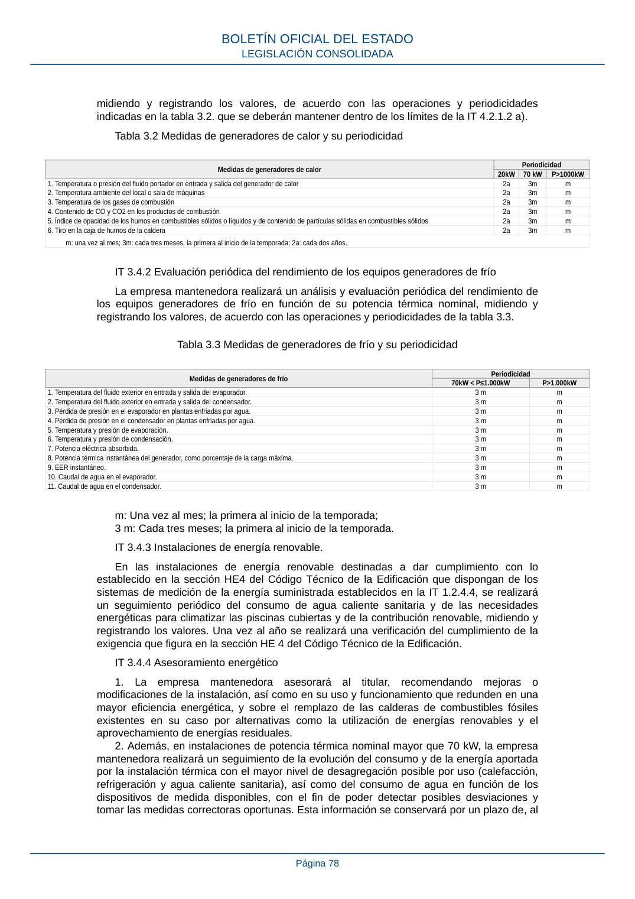

RITE · Página 78 · versión 2022-08-02
SHA256: ad1680c83bf4c7f5c656af1794c32ad0669ad9f36ac293737ff3f95177ff7b26 · página física 78 de 97 · métodos de encabezado
solo si están cotejados.
Formatos: Markdown · JSON de bloques · PDF p. 78 · imagen PNG
midiendo y registrando los valores, de acuerdo con las operaciones y periodicidades indicadas en la tabla 3.2. que se deberán mantener dentro de los límites de la IT 4.2.1.2 a). Tabla 3.2 Medidas de generadores de calor y su periodicidad Medidas de generadores de calor Periodicidad 20kW 70 kW P>1000kW 1. Temperatura o presión del fluido portador en entrada y salida del generador de calor 2a 3m m 2. Temperatura ambiente del local o sala de máquinas 2a 3m m 3. Temperatura de los gases de combustión 2a 3m m 4. Contenido de CO y CO2 en los productos de combustión 2a 3m m 5. Índice de opacidad de los humos en combustibles sólidos o líquidos y de contenido de partículas sólidas en combustibles sólidos 2a 3m m 6. Tiro en la caja de humos de la caldera 2a 3m m m: una vez al mes; 3m: cada tres meses, la primera al inicio de la temporada; 2a: cada dos años. IT 3.4.2 Evaluación periódica del rendimiento de los equipos generadores de frío La empresa mantenedora realizará un análisis y evaluación periódica del rendimiento de los equipos generadores de frío en función de su potencia térmica nominal, midiendo y registrando los valores, de acuerdo con las operaciones y periodicidades de la tabla 3.3. Tabla 3.3 Medidas de generadores de frío y su periodicidad Medidas de generadores de frío Periodicidad 70kW < P≤1.000kW P>1.000kW 1. Temperatura del fluido exterior en entrada y salida del evaporador. 3 m m 2. Temperatura del fluido exterior en entrada y salida del condensador. 3 m m 3. Pérdida de presión en el evaporador en plantas enfriadas por agua. 3 m m 4. Pérdida de presión en el condensador en plantas enfriadas por agua. 3 m m 5. Temperatura y presión de evaporación. 3 m m 6. Temperatura y presión de condensación. 3 m m 7. Potencia eléctrica absorbida. 3 m m 8. Potencia térmica instantánea del generador, como porcentaje de la carga máxima. 3 m m 9. EER instantáneo. 3 m m 10. Caudal de agua en el evaporador. 3 m m 11. Caudal de agua en el condensador. 3 m m m: Una vez al mes; la primera al inicio de la temporada; 3 m: Cada tres meses; la primera al inicio de la temporada. IT 3.4.3 Instalaciones de energía renovable. En las instalaciones de energía renovable destinadas a dar cumplimiento con lo establecido en la sección HE4 del Código Técnico de la Edificación que dispongan de los sistemas de medición de la energía suministrada establecidos en la IT 1.2.4.4, se realizará un seguimiento periódico del consumo de agua caliente sanitaria y de las necesidades energéticas para climatizar las piscinas cubiertas y de la contribución renovable, midiendo y registrando los valores. Una vez al año se realizará una verificación del cumplimiento de la exigencia que figura en la sección HE 4 del Código Técnico de la Edificación. IT 3.4.4 Asesoramiento energético 1. La empresa mantenedora asesorará al titular, recomendando mejoras o modificaciones de la instalación, así como en su uso y funcionamiento que redunden en una mayor eficiencia energética, y sobre el remplazo de las calderas de combustibles fósiles existentes en su caso por alternativas como la utilización de energías renovables y el aprovechamiento de energías residuales. 2. Además, en instalaciones de potencia térmica nominal mayor que 70 kW, la empresa mantenedora realizará un seguimiento de la evolución del consumo y de la energía aportada por la instalación térmica con el mayor nivel de desagregación posible por uso (calefacción, refrigeración y agua caliente sanitaria), así como del consumo de agua en función de los dispositivos de medida disponibles, con el fin de poder detectar posibles desviaciones y tomar las medidas correctoras oportunas. Esta información se conservará por un plazo de, al BOLETÍN OFICIAL DEL ESTADO LEGISLACIÓN CONSOLIDADA Página 78
